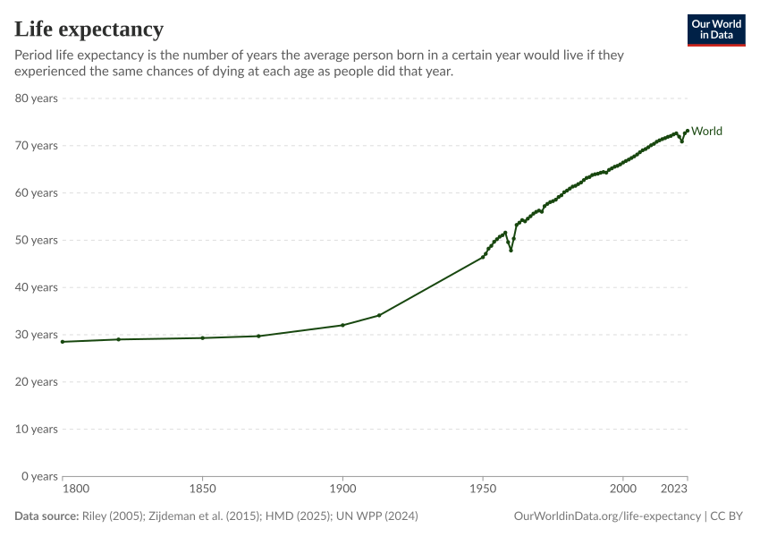
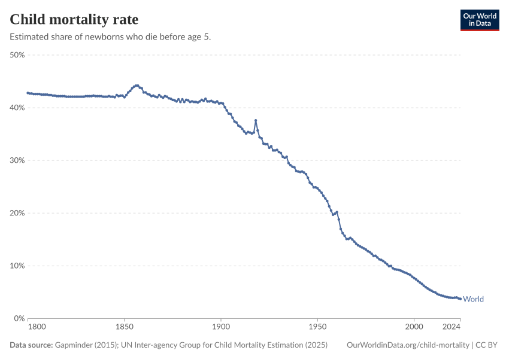
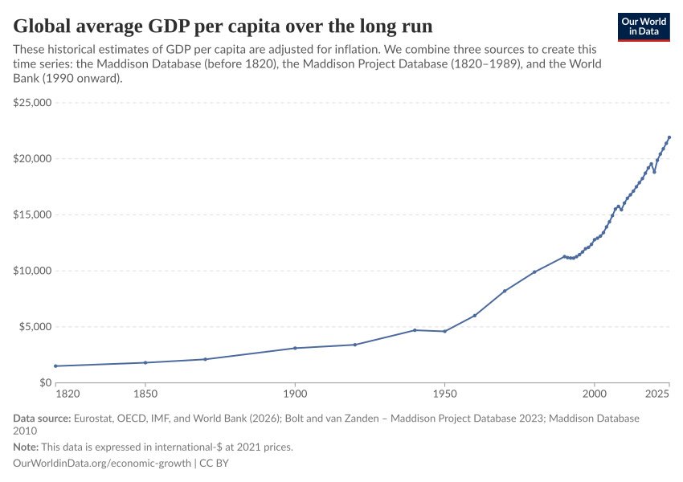

AS.001.219 · Session 1 · September 1, 2026
Progress
Why now is the best time to be alive
(and how we could lose it)
Simon D. Halliday · Johns Hopkins University
Your instructor
A few things about me
At Hopkins
Associate Research Professor and Associate Director, Center for Economy and Society, SNF Agora Institute.
I help build the new major in Moral and Political Economy.
What I work on
Institutions, fairness, behavioral economics, economic education, data literacy, and open textbooks.
I trained in both economics and creative writing—and I care about how evidence and stories work together.
The seminar
We will treat “progress” as a live question
What changed?
How much better—or worse—has human life become?
How?
Which ideas, institutions, incentives, and people made change possible?
For whom?
Who benefited, who paid the costs, and what remains unfinished?
How we will work
This is a seminar, not a spectator sport
- Read with a pencil: mark claims, evidence, surprises, and questions.
- Disagree generously: criticize ideas without caricaturing people.
- Use evidence: “I think” is a beginning, not an ending.
- Stay revisable: changing your mind is evidence that learning happened.
- Devices away by default: our attention is part of the shared classroom.
Today
Start with your own question. Then test it against a text and the data.
- Write before we discuss.
- Practice reading Crawford closely.
- Compare his claims with long-run evidence.
- End with a lens we will reuse all semester.
Opening reflection · 20 minutes
Name it precisely. Explain why it matters, whom it affects, and what makes it hard to solve. This is an ungraded baseline.
Meet someone
Introduce yourself through the problem you chose
- Your name and where you are coming from.
- The problem you wrote about—in one sentence.
- One reason you might be wrong, or one thing you need to know more about.
Listen for the problem behind the problem. What does your partner value?
Reading is an activity
Do not begin by highlighting everything
First pass
- What question is the author answering?
- What is the main claim?
- Where does the argument turn?
Second pass
- Which evidence does the work?
- What assumption is doing hidden work?
- What would change your judgment?
A simple annotation code
Leave a trail your future self can follow
C
Claim
What does Crawford want you to believe?
E
Evidence
What observation, example, or fact supports it?
Q
Question
What is unclear, contestable, missing, or consequential?
At the end of each piece, write a one-sentence summary that begins: “Crawford argues that…”
Silent reading · 18 minutes
Read for argument, not completion
Use C / E / Q. Find one passage you want the group to discuss. If you finish one piece, move to the other.
In groups of three
Reconstruct Crawford before evaluating him
- Each person shares one sentence: “Crawford argues that…”
- Choose one passage that best supports the argument.
- Name one assumption or missing perspective.
- Decide what you would ask Crawford if he were here.
“Fish in Water”
Choose one ordinary object. Trace it backward: invention → infrastructure → institution.
Achievement

More years of life
Global life expectancy rose from roughly 29 years in 1800 to more than 73 in 2023.
Question: Which hidden systems had to improve together to produce this curve?
System

Many things must go right
Child survival reflects nutrition, clean water, sanitation, vaccines, maternal health, medical care, and living standards.
Question: Is the achievement best explained by a technology, a market, a state—or a system?
Material capacity

The scale of production changed
For most of history, average material living standards changed slowly. Then the curve bent.
Question: What does GDP reveal—and what can it never tell us by itself?
“The Present Crisis”
A defense of progress is not a claim that everything is fine
- Past gains were not automatic.
- Benefits remain unequally shared.
- Technologies can create harms and risks.
- Human flourishing and agency—not “more technology” alone—are the standard.
The argument: we should respond to problems by becoming better at solving them.
A lens for the semester
Test every claim about progress three ways
Achievement
What human problem became easier to solve? What evidence shows the change?
System
Which ideas, people, infrastructure, incentives, and institutions produced and sustain it?
Frontier
Who has not benefited? What costs remain? What should improve next?
Before Thursday
Bring one prediction you are willing to test
Read the Introduction and Chapter 1 (“The Gap Instinct”) of Factfulness.
Mark one claim that surprises you and one place where you remain unconvinced.
Our question: do our instincts about the world match the evidence?